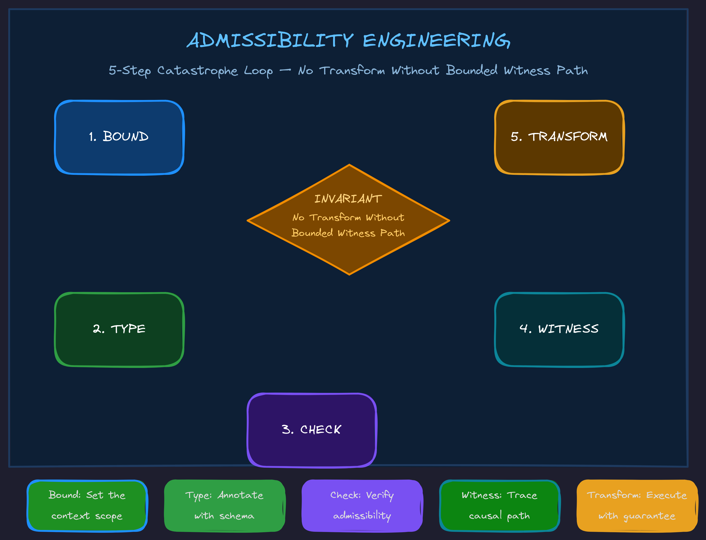

April 2026Level 3 · ContextLevel 5 · Admissibility
Admissibility Engineering: The Missing Layer
Better context is not more context. Better context is context whose boundary, authority, and hidden causal edges are known.

The Category Shift
The hypebeast world says: Give the agent better context.
Admissibility Engineering says: Better context is context whose boundary, authority, and hidden causal edges are known.
A giant context window full of stale docs, partial search results, missing hidden callers, and false comments can make the model worse. Admissible context is not bigger. It is bounded, typed, and checkable.
The Invariant
No transformation without a bounded witness path.
For code, admissibility might require:
entrypoint known execution path traced hidden calls exposed side effects known contracts identified docs/comments checked tests located validation path exists
For story logic, admissibility might require:
theme known grand argument known premises bound scene obligations generated literal events/dialogue grounded upward proof path closes
For business automation, admissibility might require:
SOP boundary known owner known inputs/outputs known exception paths known approval points known tool permissions known failure recovery known
Different domains. Same invariant.
Bridging the Hype
"Prompt Engineering is dead"
Prompt Engineering was never dead. It became one local interface inside a larger context-control system. But Context Engineering is also not enough, because context can be stale, excessive, contradictory, or missing hidden causal edges. The deeper correction: Context must be admissible.
"MCP/tools make agents powerful"
Tools increase action capacity. They do not automatically increase action understanding. A tool call can trigger hidden effects:
file edit → hook fires → state file changes → index updates → graph changes → future retrieval changes
The deeper correction: Tool Engineering needs Action Causality Maps. A tool is not just an API. It is an event in an environment.
"Agents need harnesses"
Yes. The harness is the runtime wrapper that makes agents reliable. The deeper correction: A harness without admissibility gates can reliably execute inadmissible actions. That is very dangerous and very common.
"Agents fail because they lose context"
Sometimes. But often they do not lack context — they lack concentration. They had the information somewhere in the window but failed to keep it operationally active while editing. The deeper correction: Concentration Engineering stabilizes attention over the active semantic boundary.
"Agents should learn from feedback"
Yes, but feedback loops can rot. If the loop stores bad summaries, stale docs, false assumptions, and hidden side effects, the agent gets worse while appearing more "contextual." The deeper correction: Emergence Engineering distinguishes productive bootstrapping from degenerative accumulation.
Catastrophe Engineering
A catastrophe is an observed failure that invalidates the agent's current semantic frame. Catastrophe Engineering designs failures so that:
1. the invalid frame is named 2. the missing boundary object is exposed 3. the required higher-order frame is supplied 4. the repair adds a persistent witness or gate 5. future agents encounter the improved boundary before repeating the failure
Example:
Failure: Agent edited a generated file directly. Local patch: Revert generated file and edit source. Catastrophe abstraction: The system lacks a generated-artifact admissibility marker. New rule: GeneratedFileEditedDirectlyError New witness: DOCMAGIC: GENERATED-BY source=templates/agent.py.j2 New gate: Before editing any file, check generated_by(file, source). Future effect: The same class of mistake becomes less likely.
Every recurring mistake should be engineered into a catastrophe surface that forces the agent to fold into the semantic space where the mistake becomes obvious.
Related Principles
Traceback-Based Adversarial Prompting
A traceback is not just an error report. In an agentic system, a traceback is an instruction surface. Agent-engineered tracebacks should prime the model into the semantic frame required to repair the failure.
ADMISSIBILITY ERROR: Missing execution-boundary witness. The agent attempted to edit produce_node_output() as if it were locally owned. However, this function is indirectly called by FlowPatternRegistry.hydrate(). Required repair: 1. Read the hidden caller. 2. Preserve the ChainConfig-compatible return contract. 3. Update the local DOCMAGIC:HIDDEN-CALL marker. 4. Rerun tests/test_chain_hydration.py. Do not patch this function until the hidden caller contract is accounted for.
That error is diagnosis + adversarial correction + context packet + next action constraint + semantic frame switch — all in one.
Errors for Everything
If you want to sculpt an agent's action space, you need possible failures to be explicitly representable. An agent can only be redirected when the system can say: This action is not allowed because X.
A system's ability to guide an LLM is bounded by the granularity of the errors it can raise.
Detection Requires Typed Semantics
A raw string is an untyped semantic fog machine. If something is only represented as str, then from the program's perspective it is not a theme, premise, contract, file path, hidden caller, argument surface, stance target, or repair instruction. It is just characters.
Detection requires typed semantic commitments. If the system only has strings, it can only guess.
Go Deeper
Admissibility Engineering is part of the TWI framework library — a complete methodology for building AI systems that compound instead of collapse.
Want to apply admissibility thinking to your AI systems? We work directly with leadership teams to implement frameworks that prevent the invisible drift.